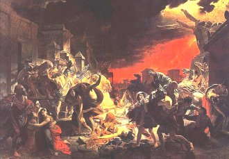

Vasnestov: Bojovník
Vasnestov: Létající koberec
|
RUSKÝ ROMANTISMUS
Rusko bylo velmocí prvního řádu, ale většinou stálo stranou evropského kulturního dění. Určitá změna nastala až v době vlády Petra Velikého (1682-1725) a Kateřiny II. (1762-1796). Strach z šíření revolučních ideálů vedl ke zpřísnění cenzury. Někdy se jí ujímal i samotný car. Postihy pro osoby podezřelé z protistátní činnosti byly velmi tvrdé – většinou šlo o trest smrti nebo dlouholeté vyhnanství.
Romantičtí umělci nebyli výjimkou.
Orest Adamovič Kiprenskij (1782-1836) a Vasilij Andrejevič Tropinin (1776-1857) malovali romantické portréty. Malíř Alexej Gavrilovič Venecianov (1780-1847) se věnoval venkovským námětům. Významným malířem byl rovněž Karl Pavlovič Brjullov (1799-1852).

Brjullov: Soudný den
|
Historie
Ruské samoděržaví bylo drsnější obdobou evropského absolutismu. Všechno se muselo řídit přáním cara. Za vlády Alexandra I. (1801-1825) odrazil generál Suvorov vpád Napoleonovy armády. Potlačeno bylo i povstání děkabristů (1825). Jeho nástupce Mikuláš I. (1825-1855) pokračoval v terorizování obyvatelstva. Povstání Poláků (1830-1831) proti ruské nadvládě skončilo neúspěchem. Nevolnictví bylo v Rusku zrušeno až v roce 1861.
Venecianov: Mlat
|
Alexandr Sergejevič Puškin
(1799-1837)
Puškin pocházel ze šlechtického rodu. Za své názory byl poslán na 4 roky do vyhnanství (Kavkaz, Krym) a musel žít pod policejním dohledem na rodinném statku v Michajlovském. Později mu car dovolil návrat do Petrohradu. Napsal poémy Kavkazský zajatec, Bachčisarajská fontána a Cikáni, historické básně Poltava a Měděný jezdec nebo
pohádky Ruslan a Ludmila a O rybáři a rybce.
Je autorem románu ve verších Evžen Oněgin, dramatu Boris Godunov, cyklu Povídky nebožtíka Ivana Petroviče Bělkina a novel Kapitánská dcerka, Piková dáma nebo Mouřenín Petra Velikého. Zemřel v zinscenovaném souboji, když bránil čest své manželky. Car na jeho adresu prohlásil: „Psovi psí smrt." Puškin bývá někdy řazen k realistům.
Tropinin: Puškin
|
Alexandr Sergejevič Puškin: Evžen Oněgin
Veršovaný román Evžen (Eugen) Oněgin je typickým příkladem romantického míšení žánrů a forem. Titulní hrdina odjíždí z Petrohradu na venkov, aby se ujal dědictví po svém strýci. Seznamuje se zde s romantickým básníkem Lenským a dcerami statkářky Larinové – Taťánou a Olgou. Taťána se do Oněgina zamiluje, ale on její lásku neopětuje a záměrně se dvoří její sestře Olze, kterou miluje Lenskij. Souboj mezi oběma soky skončí smrtí Lenského. Oněgin odjíždí pryč. Když se po letech vrací ze svých cest, zjistí, že se Taťána provdala. Tentokrát se do ní opravdu zamiluje, ale Taťána volí jistotu a zůstává u svého manžela, přestože Oněgina stále miluje.
Puškinův román vnesl do ruské literatury později velmi oblíbenou postavu tzv. zbytečného člověka, který nedokáže naplnit svůj život, přestože pro to má všechny předpoklady.
Alexandr Sergejevič Puškin: Boris Godunov
Historické drama Boris Godunov se odehrává na přelomu 16. a 17. století. Poručník cara Fjodora Boris Godunov nastupuje po smrti svého svěřence na ruský trůn. Proti novému vládci ale povstane Grigorij Otrepjev, který se vydává za careviče Dimitrije, prvorozeného syna cara Ivana Hrozného a oprávněného dědice, jehož nechal Godunov zavraždit. Falešný Dimitrij nakonec Godunova porazí, ale když lidé vidí, jak krutě zavraždil jeho příbuzné, odmítne provolat novému carovi slávu.
Car Mikuláš I. hru Boris Godunov zakázal. Knižně mohla vyjít po pěti letech a premiéra proběhla až 40 let po jejím napsání!
Alexandr Sergejevič Puškin: Kapitánská dcerka
Puškinova próza Kapitánská dcerka se odehrává v době rolnického povstání Jemeljana Pugačova (1773-1775). Mladý šlechtic Petr Andrejevič Griňov se musí připojit k vojenské jednotce, která hlídá jihovýchodní hranici Ruska. Spřátelí se zde s Pugačovem a zamiluje se do Marji Ivanovny Mironovové, dcery kapitána jedné z místních pevností. Když vypukne povstání, Pugačov pevnost obsadí. Ze sympatie Griňova propustí, ale ten se vrací zpátky, protože jeho milované hrozí nebezpečí. Pugačov mu dovolí Marju odvézt, ale vzápětí je Griňov odsouzen za spojenectví s vůdcem povstání. Až po naléhavé prosbě své dívky dostává Griňov milost od samotné carevny Kateřiny II.
|

Puškinova skica k Oněginovi
Puškin používal zvláštní rýmové schéma. Pokus se ho popsat.
Napiš milostný dopis (nemusí být ve verších).
Výtisk románu Evžen Oněgin
Puškin: Evžen Oněgin
|
Michail Jurjevič Lermontov
(1814-1841)

Po smrti matky Lermontova vychovávala jeho babička. Kvůli konfliktům s profesory odešel z univerzity na vojenskou školu. Za báseň Na smrt Puškinovu byl poslán na kavkazskou frontu. Jeho babička se sice domohla Lermontovova návratu do Petrohradu, ale po vydání románu Hrdina naší doby se situace opakovala a spisovatel znovu skončil na Kavkaze. Zemřel v souboji stejně jako Puškin. Napsal řadu básní, drama Maškaráda (cenzor ho autorovi dvakrát vrátil k přepracování) a poému Démon, která mohla v Rusku vyjít až roku 1860.
Zjisti, jaký je rozdíl mezi poémou a poezií.
Srovnej poému s byronskou povídkou.
Lermontovova kresba souboje
|
Michail Jurjevič Lermontov: Hrdina naší doby
Román v novelách Hrdina naší doby popisuje osudy šlechtice Grigorije Alexandroviče Pečorina. V první novele vypravuje kapitán Maxim Maximyč příběh tragické lásky čerkeské dívky k hlavnímu hrdinovi. Následuje tzv. Pečorinův deník, ve kterém Pečorin popisuje svá dobrodružství – střet s černomořskými podvodníky, milostné pletky a souboj s přítelem Grušnickým. Poslední novela Fatalista řeší problém nahodilosti nebo předurčenosti lidského osudu.
Michail Jurjevič Lermontov: Démon
Poéma Démon odráží změnu chápání ďábla, která se začala prosazovat v době romantismu. Démon zůstává nositelem zla a nenávisti, zároveň se ale stává symbolem svobody a poznání. Své postavení nese velmi těžce, nemůže se s ním smířit a stále touží po změně. Vlastní děj poémy se odehrává v kavkazských horách. Démon se zamiluje do kněžny Tamary, způsobí smrt jejího ženicha a probouzí v ní podivné city. Tamara raději volí odchod do kláštera. Když se Démonovi konečně podaří přesvědčit ji o opravdovosti své lásky, umírá Tamara jeho polibkem. Osmá verze Lermontovovy poémy obsahuje nové zakončení, ve kterém Tamařina duše nachází vykoupení a Démon je opět poražen.
Lermontovovy básně
|

Pečorin na obraze ruského malíře Michaila Alexandroviče Vrubela (1856-1910).
Co můžeš říci o Pečorinovi na základě této ukázky? Jaký je to člověk?
Vrubel: Démon a anděl s Tamařinou duší
|
Alexandr Sergejevič Gribojedov (1794-1829)
Gribojedov byl „zázračným dítětem“ – ve 12 letech začal studovat na univerzitě a absolvoval fakultu filologickou, právnickou i matematicko-fyzikální! V Petrohradě proslul jako lev salónů a dramatik. Po Napoleonově vpádu do Ruska vstoupil do armády. Později působil ve státních službách jako diplomat. Zemřel v Teheránu, když zfanatizovaný dav napadl budovu ruské mise.
|
Alexandr Sergejevič Gribojedov:
Hoře z rozumu
Hlavní postavou komedie Hoře z rozumu je Alexandr Andrejevič Čackij, který se vrací po dlouhém pobytu v cizině do Moskvy. Čackij velmi rychle ztrácí iluze o lidech kolem sebe a odcizuje se celé společnosti. Jeho dávná láska Sofie dává přednost pokryteckému Molčalinovi, který udržuje vztah se služebnou. Čackého činy nechápe ani Sofiin otec, konzervativní státní úředník Famusov. Moskevská smetánka nakonec prohlásí Čackého za blázna a ten opět odjíždí pryč.
|
Petr Jakovlevič Čaadajev
(1794-1856)
Osud Čackého potkal ruského filozofa Čaadajeva. Po zveřejnění prvního dopisu z cyklu Filozofické listy byl prohlášen za duševně chorého a dán pod lékařský dohled. Stejně dopadla i jeho adresátka. Časopis Těleskop, ve kterém zamyšlení o tom, že ruské dějiny jsou dějinami násilí, vyšlo, byl zastaven a jeho vydavatel poslán do vyhnanství...
Charakterizuj postavy Čackého a Famusova.
|
Internetové stránky
Russian links
Puškin, informace
Puškin: Cesta do Arzrumu
Puškin: Měděný jezdec
Puškinovo muzeum
Puškinovo muzeum
Pushkin’s poems
Lermontov, díla
Lermontov, obrázky
Ruští malíři 19. století
Vasnestov, obrazy
Všeználek, azbuka
|
Doporučená četba
Gribojedov, Alexandr Sergejevič: Hoře z rozumu, přel. B.Franěk, Odeon, Praha 1979
Lermontov, Michail Jurijevič: Démon, přel. J.Hora, Praha 1939
Lermontov, M.J.: Hrdina naší doby, přel. Bergrová, Ilek, Praha 1966
Lermontov, M.J.: Jak volný vítr..., Dílo a život básníka, Naše vojsko, Praha 1957
Lermontov, M.J.: Maškaráda, přel. E.Frynta, Praha 1971
Lermontov, M.J.: Proměny démona, Československý spisovatel, Praha 1967
Lotman, J.M.: Puškin, přel. J.Zumrová, Lidové nakladatelství, Praha 1987
Panoráma ruské literatury, Albert, Boskovice 1995
Parolek, R., Honzík, J.: Ruská klasická literatura, Svoboda, Praha 1977
Puškin, Alexandr Sergejevič: Boris Godunov, přel. E.Frynta, Odeon, Praha 1980
Puškin, A.S.: Evžen Oněgin, přel. J.Hora, Praha 1977
Puškin, A.S.: Piková dáma a jiné prózy, přel. Mathesius, Moisejenková, Lidové nakladatelství, Praha 1980
Puškin, A.S.: Souboj o budoucnost, přel. H.Vrbová, Svoboda, Praha 1988
Puškin, A.S.: Tři karty, Odeon, Praha 1975
Puškin, A.S.: V bouři zrál můj hlas, Praha 1975
Puškin, A.S.: Výbor z díla, Albatros, Praha 1981
Puškin, A.S.: Výbor z díla (3 svazky), Svoboda
Slovník ruských, ukrajinských a běloruských spisovatelů, Libri, Praha 2001
Spisy A. S. Puškina (9 svazků), Odeon
|
Připrav si referát o některé z uvedených knih nebo internetových stránek.
Puškinův autoportrét
|
|